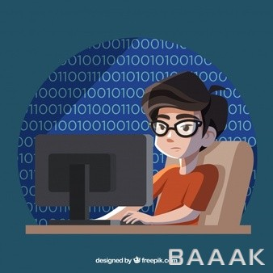

متن در مورد برنامه نویسی

برنامهنویسی این امکان رو به شما میده تا در مورد خودِ «فکر کردن» فکر کنید و وقتی هم که دیباگ میکنید،
مهمترین چیز در ارتباط با یک زبون برنامهنویسی، اسمش هست یک زبون برنامهنویسی که اسم خوبی نداشته باشد نمیتونه موفق بشه.

در آینده برنامهنویسان نقش جادوگران رو بازی خواهند کرد چرا که قدرتی جادویی دارن که دیگر افراد جامعه فاقد اون هستن.
یه برنامه نویس جسمش پیش شماست اما فکرش حل کردن مشکل برنامه اش است…
برنامه نویسی شغلیه که اصلاً به چشم نمیاد ولی اگه نباشه ما یه خرید ساده رو هم نمیتونیم انجام بدیم.
فقط یک برنامهنویس میتواند درک کند که پایان یک پروژه چه لذتی دارد.
